Who knew that a simple WhatsApp admission group would bring us together?
We saved each other’s numbers, probably never thinking much of it.
Life moved on, but somehow, our story was already being written in the background.
A whole year passed before we really started talking.
And when we did, it just clicked. From random chats to deeper conversations,
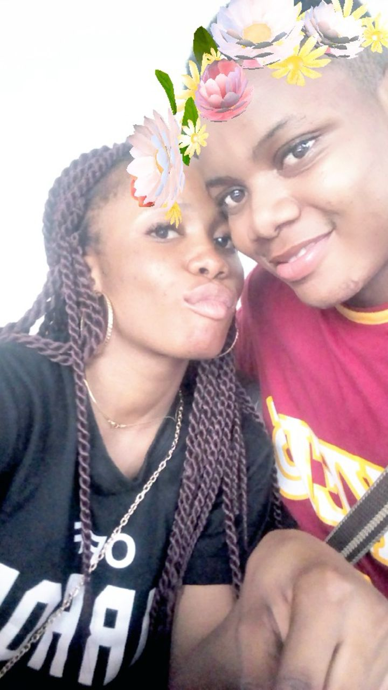
before we knew it, we had built something special without even realizing it.
You just stood there, watching me dance—because, let’s be honest, you can’t dance to save your life. But I love how you look at me like I’m the best dancer in the world.
I still remember every little detail of our first proper date. It was the moment I realized this connection was something special, something different.
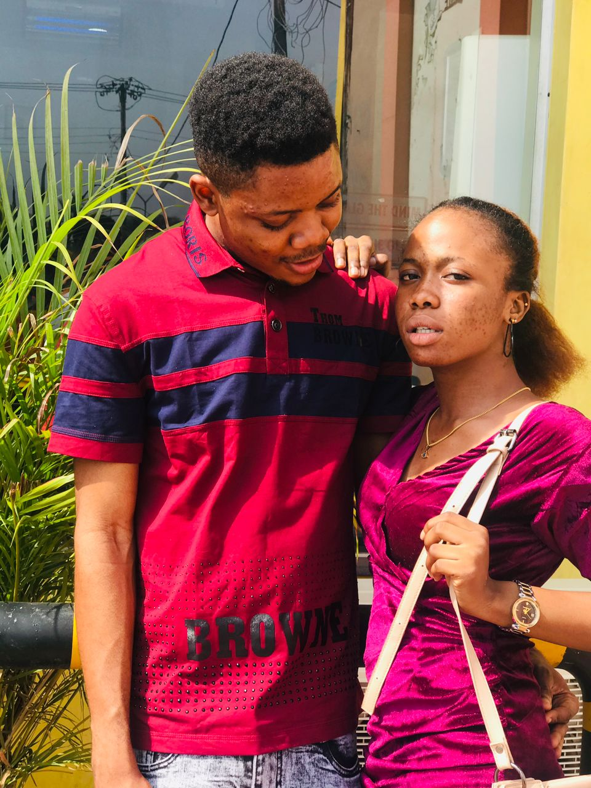
Pure happiness—just us, the water, and a moment that felt so easy and right. Safe, loved, and exactly where I want to be.
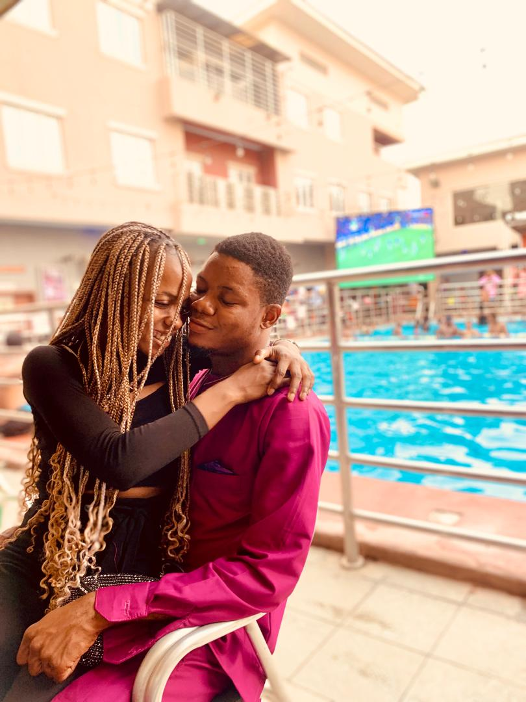
The sound of the waves, the breeze in our hair, and you right beside me—nothing beats this.
There’s something about the beach that makes everything feel lighter, just like being with you.
My peace, my adventure buddy, my favorite person.
Look at My Baby! Throwback to this fine boy! Some things never change—still handsome, still charming, and still my favorite person. Just a little glow-up, but he’s always been a spec!
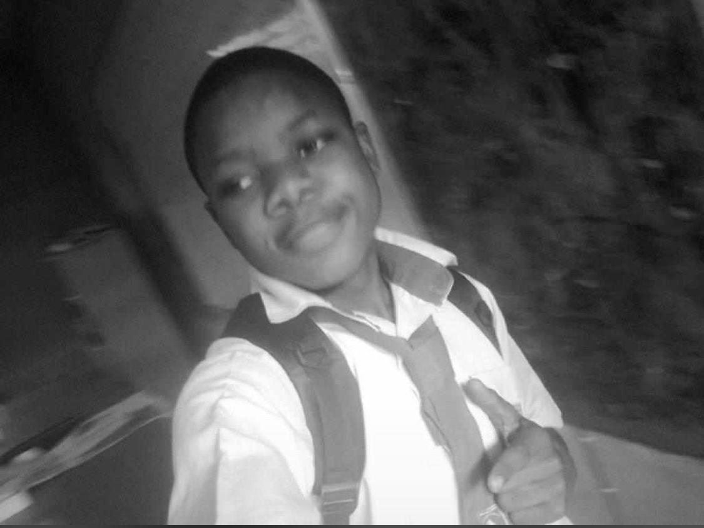
This picture may be black and white, but the happiness in it is so full of color. Just us, smiling, caught in a moment that feels simple yet so special. Some things never go out of style—like this smile, like us
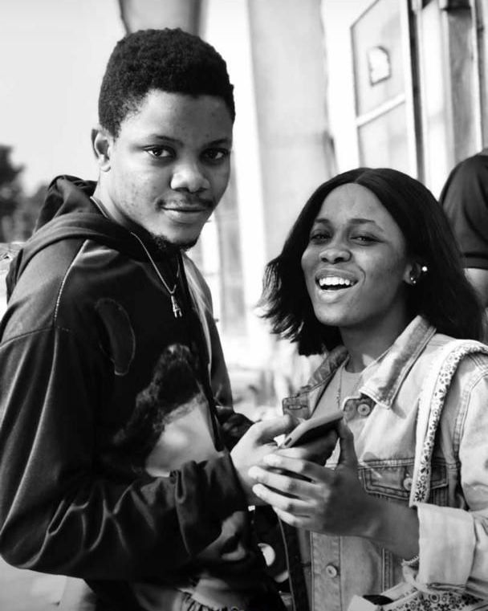
The Man That He Is
My boyfriend is a real babe. He’s not just my love—he’s my friend, my support system, my safe place. He plays so many roles in my life, and I should celebrate him every day, not just today.
Foodie or Not, Good Food Wins
“You have a love-hate relationship with food—you don’t really love eating, but when it’s good, you never say no.
You and your video call antics—always feeling yourself, always making me laugh. A whole superstar in your own world!
Here’s my baby, looking all cute even while complaining about how I stressed him. He always insists on following me to the market—talks a big game!,then he’s tired, cranky, and swearing he’s never coming again.
Unplanned but in sync—somehow, we showed up twinning without even realizing it. Guess that’s what happens when you’re this connected.
My love, I am so proud of you! Seeing you reach this milestone fills my heart with so much joy. This is just the beginning, and I can’t wait to see all the amazing things you’ll do.
This video is so special to me The quiet moments, the unspoken connection, the way we just are together.
I love love, and I love us. Every moment with you is a gift, Every memory we create is priceless
and I’m grateful to be doing life by your side.
This is just the beginning of our beautiful story—one filled with laughter, growth, and endless love.
Happy Valentine 💘💌My love😍
 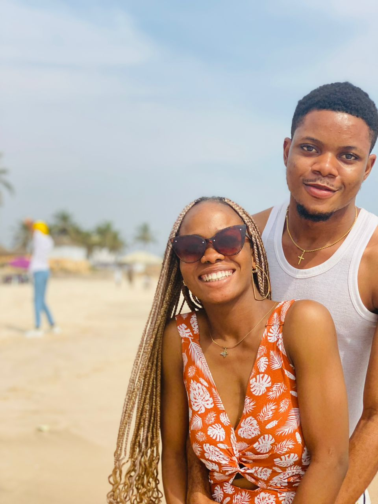
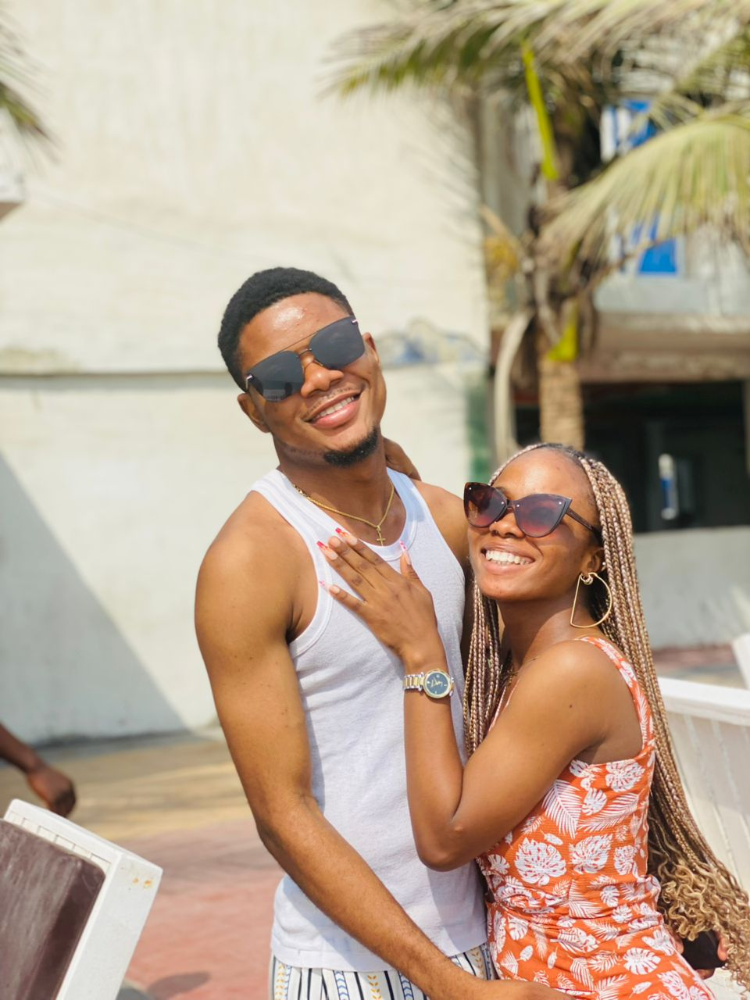
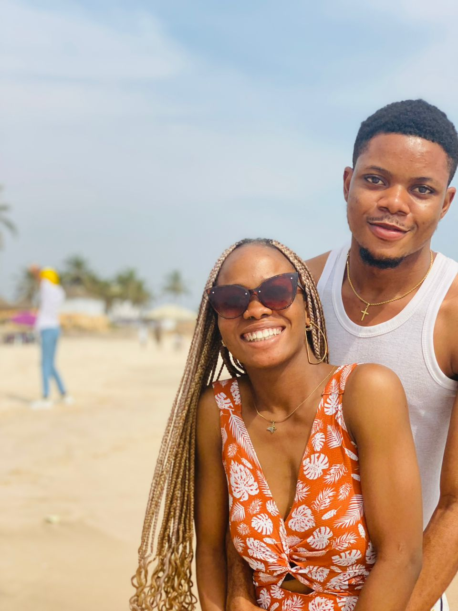
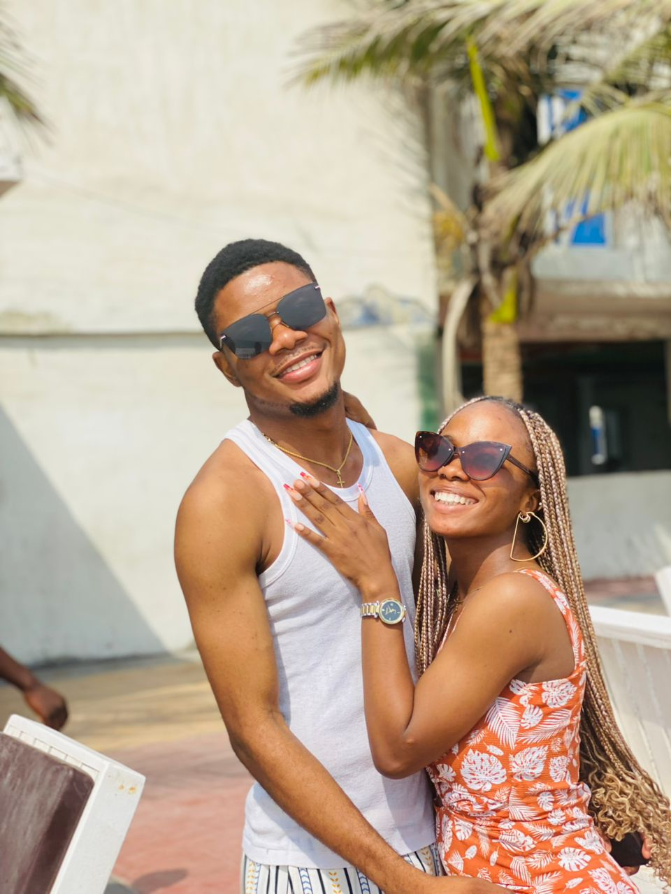
 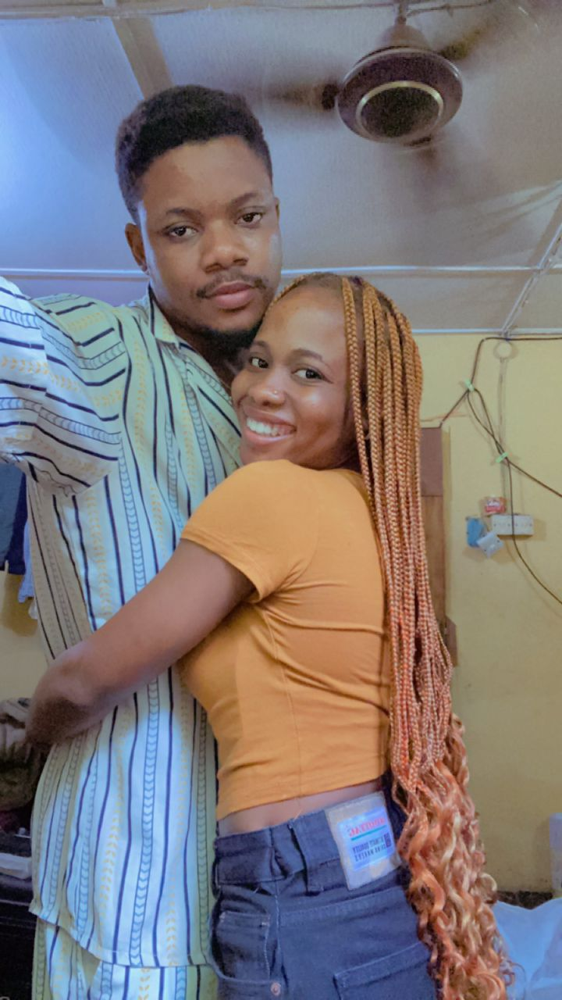
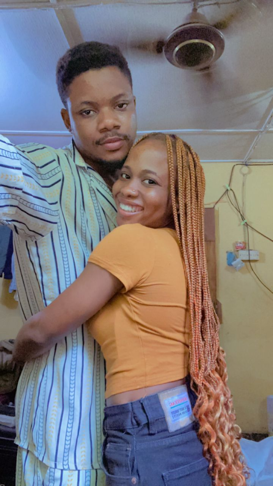
 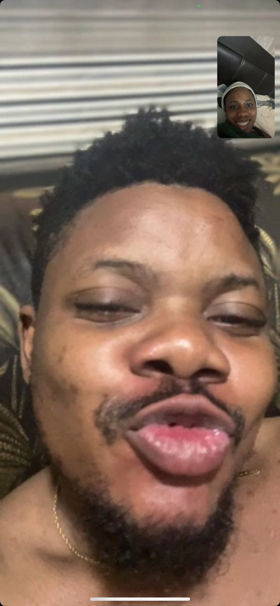
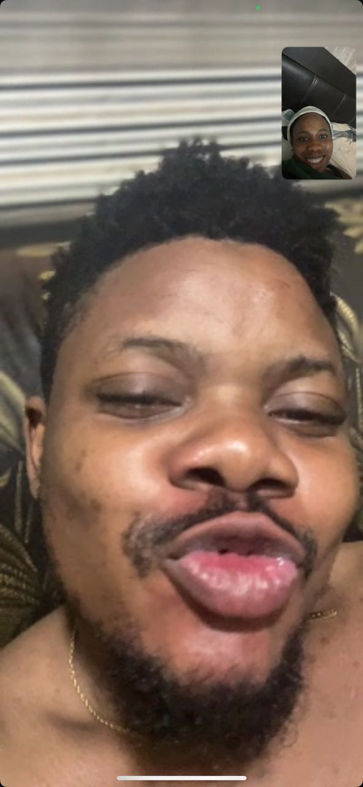